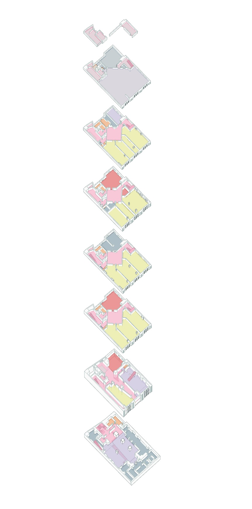
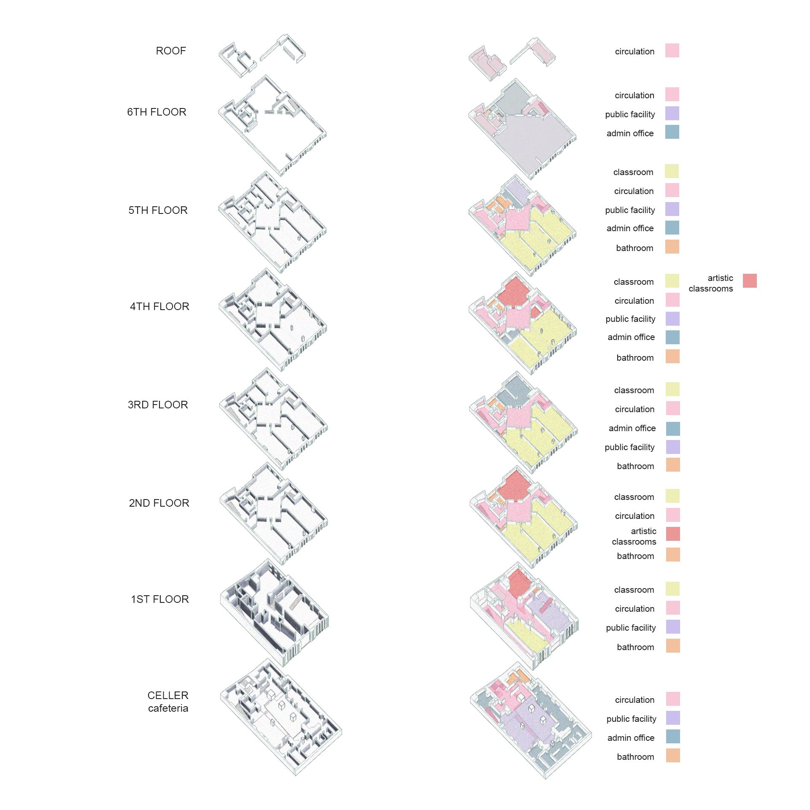
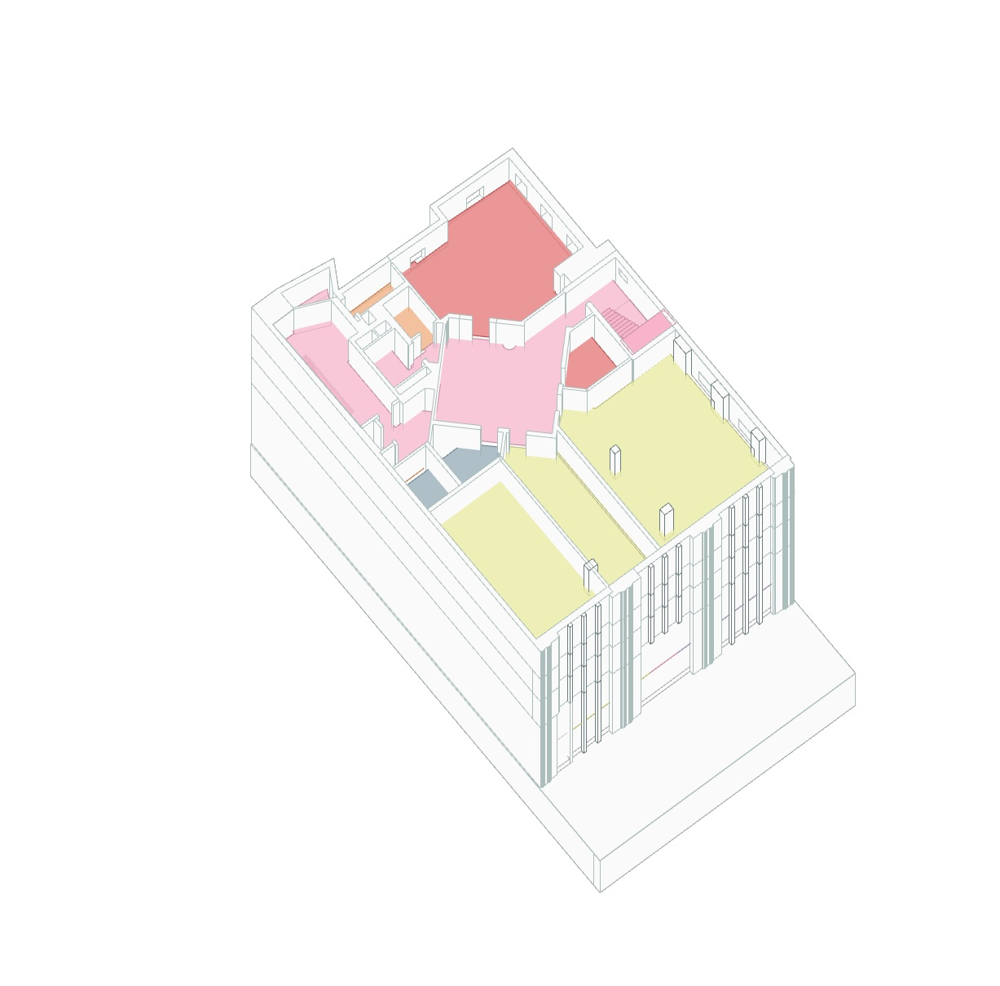
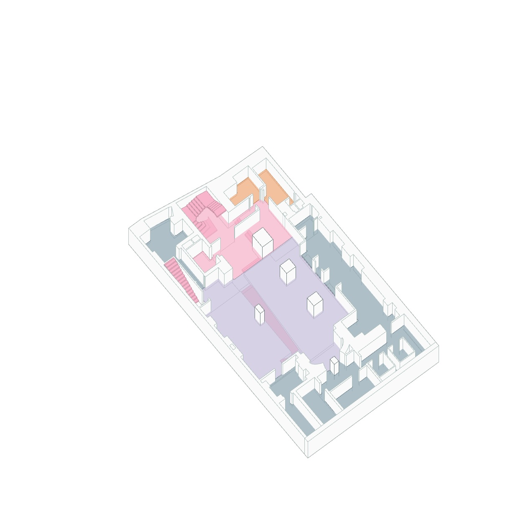

Projects
Saint Ann's School Farber Building
Interior design and program studies for the Saint Ann's School Farber Building renovation. The project reorganizes classrooms, library zones, and circulation across a multi-story school building, using modular pod systems and warm material palettes to create flexible, student-centered learning environments.


Program Analysis


Program analysis — cellar cafeteria through roof: classrooms (yellow), circulation (pink), public facility (blue), admin office (blue-grey), artistic classrooms (red), bathroom (orange).
Axonometric Studies

Ground floor — main space (lavender), circulation (pink), and service zones (blue-grey).

Upper floor — artistic classroom (red), circulation (pink), and classroom spaces (yellow).
Return to Projects